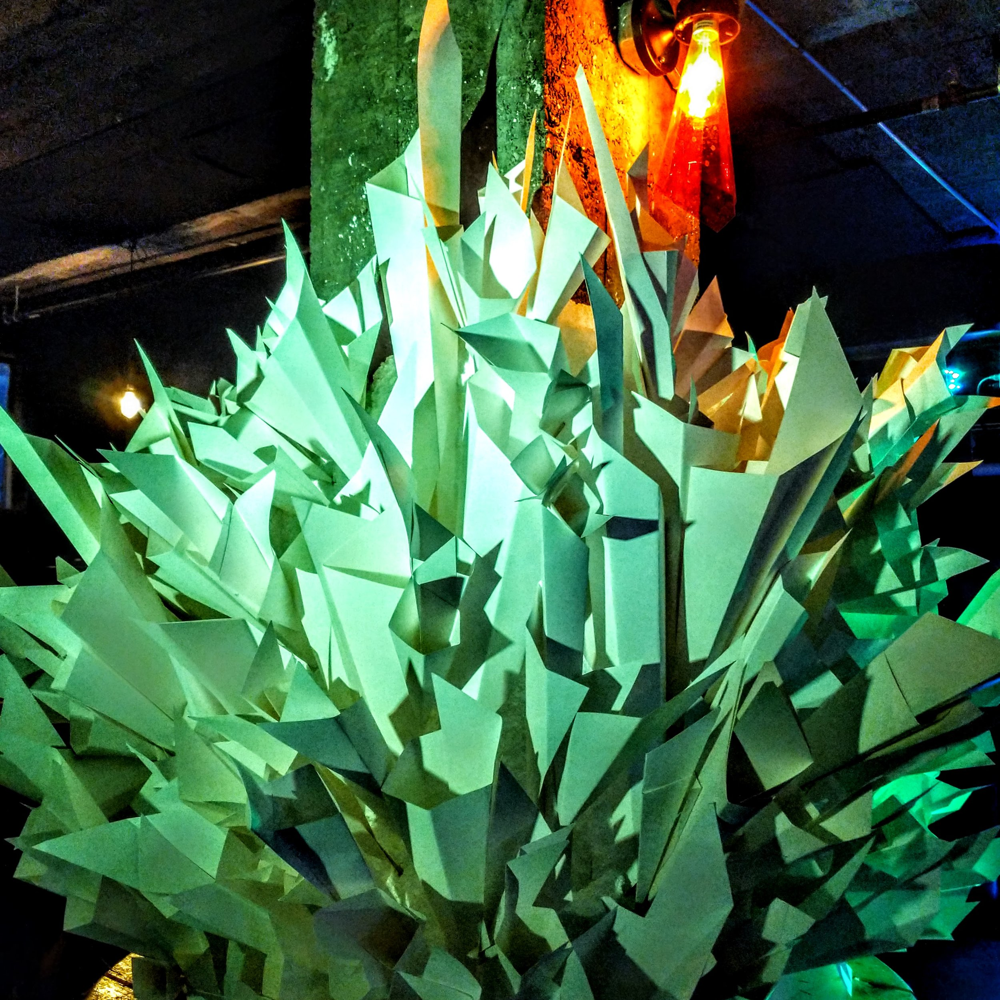
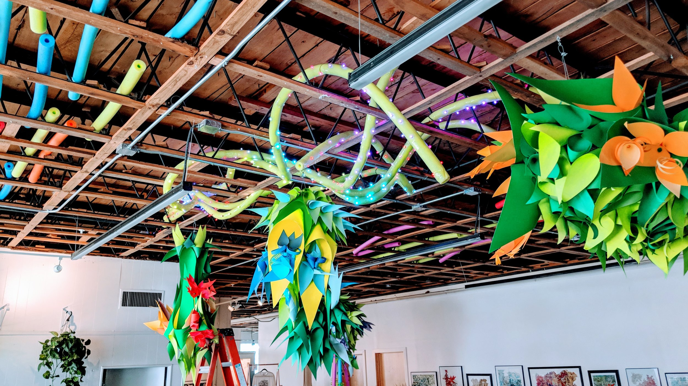
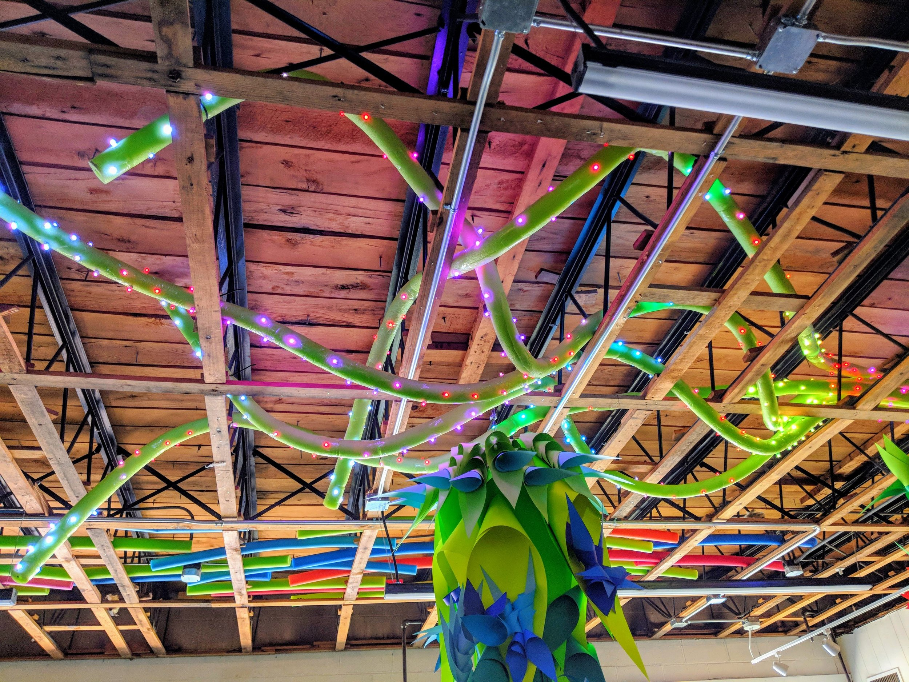
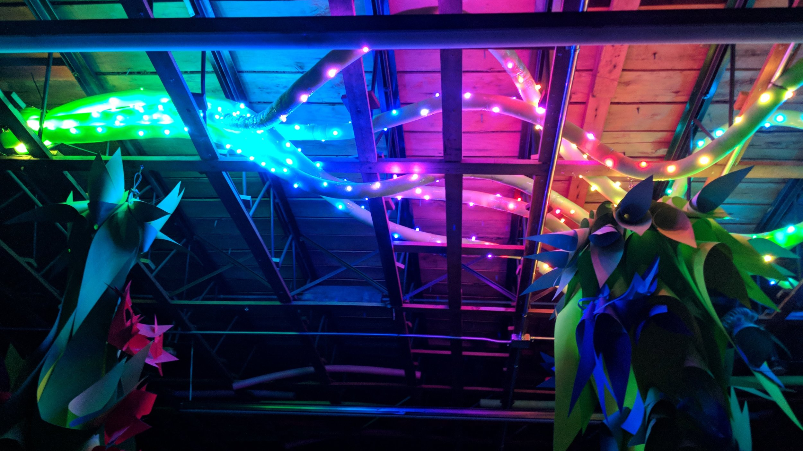
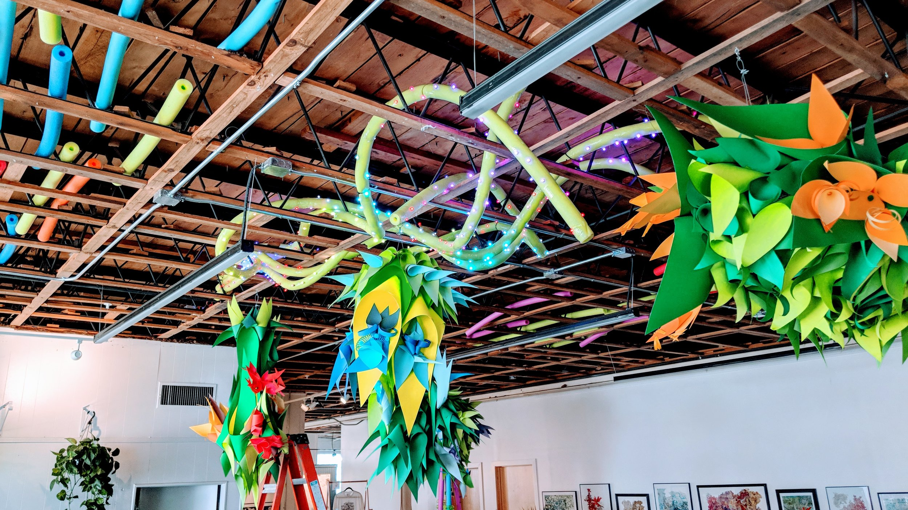
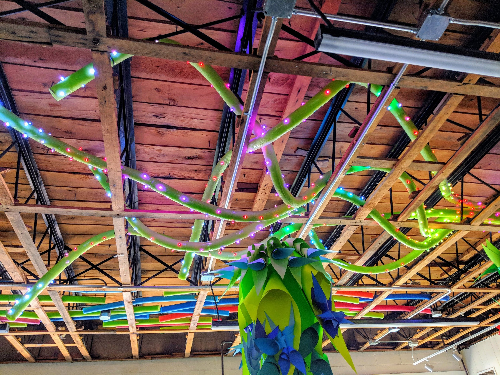
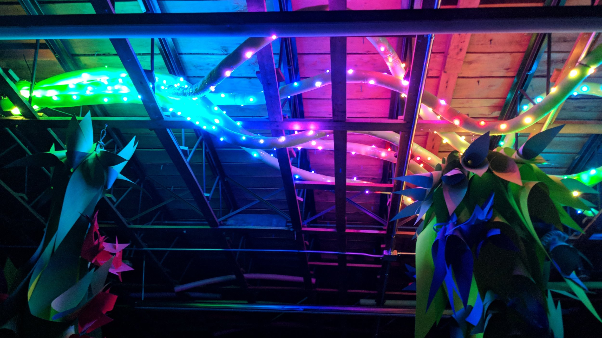
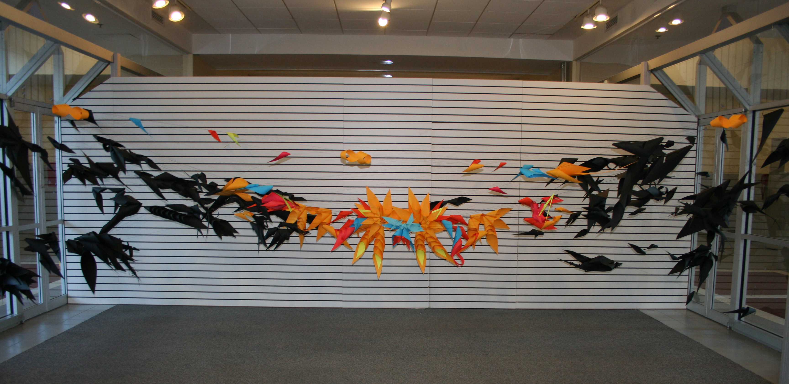
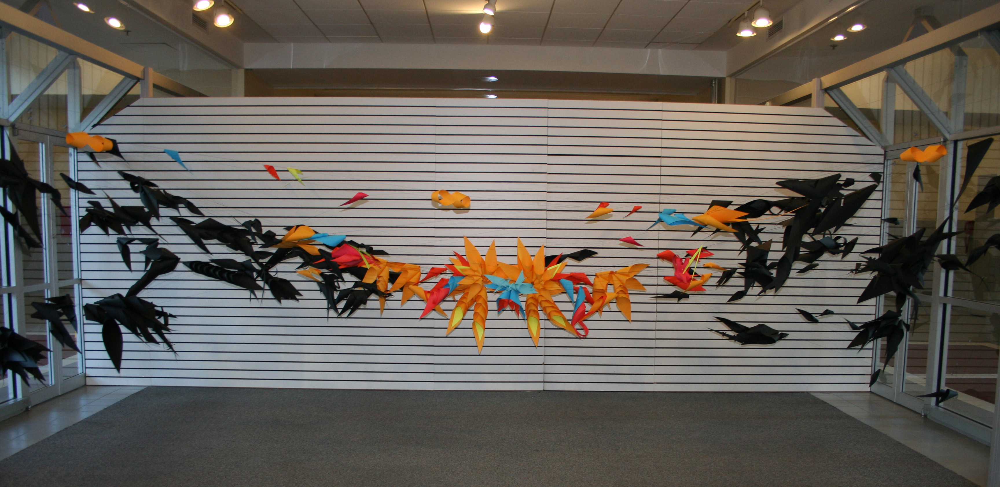

Crystal Caves
Des Moines Social Club
2019 New Years Bash
January 2019
The Des Moines Social Club holds many curtural events each year and for their 2019 Club event was space. These shapes mimic a night scene in a crystal cave or on a distant planet.
-

 







 
